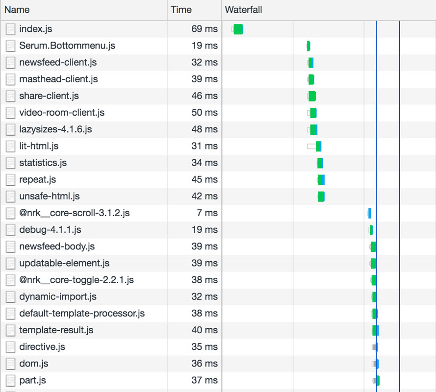
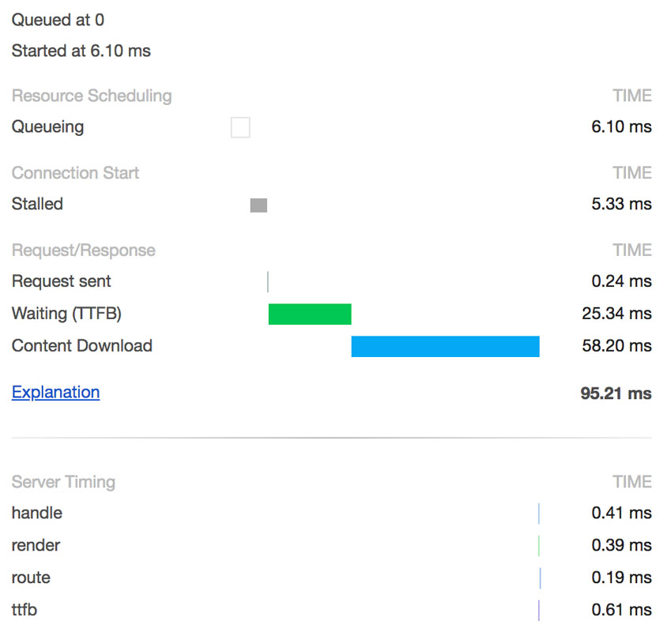
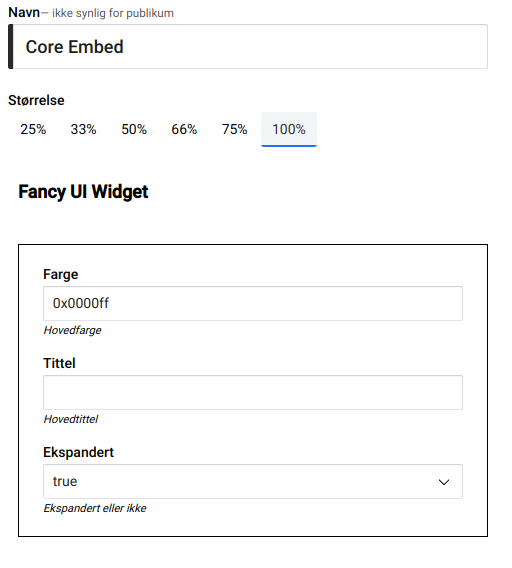

#1 Configuration
{
"api": {
"cacheMaxSize": 1000,
"maxAgeFeed": "1m",
"maxAgeImmutable": "24h",
"maxAgeMutable": "1s",
"origin": "${__SUPPLIED_BY_ENV__}",
"pathnames": {
"blueprint": "/houses/${id}/ids",
"house": "/houses/${itemId}/${id}",
"feed": "/${type}/houses/${houseId}",
"floor": "/floors/${itemId}/${id}",
"room": "/rooms/${itemId}/${id}"
},
"retry": "${__SUPPLIED_BY_ENV__}",
"secretKey": "${API_SECRET}",
"timeout": "${__SUPPLIED_BY_ENV__}",
"urls": "**generated at runtime**"
}
}
/config.json
**files here are added by runtime env**.txt
**files here are loaded in sort order**.txt
local.json
/config
import config from '@nrk/frontend-common/config.js';
const houseEndpoint = config.get('api.urls.house');
// => https://kurator-api-stage.nrk.no/houses/${itemId}/${id}
const apartmentEndpoint = config.get('api.urls.apartment');
// => Boom! Error: no config value found for "api.urls.apartment"
/src/some.js
{
"NODE_ENV": {
"test": {
"api": {
"origin": "http://localhost:8080"
}
},
"production": {
"api": {
"origin": "https://kurator-api.nrk.no"
}
}
}
}
/config/local.json
One of the most important goals of good design is for a system to be obvious, and one place where being obvious is important is application configuration
Our new config setup describes all configuration options in one place (config.json), and is explicit about which values must be supplied by the runtime environment
Environment values are loaded from the /config directory, which can be populated using Kubernetes ConfigMaps
During runtime, any missing environment variables will throw and cause the application to crash, preventing rollout
Reading non-existant values will also throw an error. Obvious errors are simpler to fix than hidden ones
Another benefit of being explicit is that the application has no concept of environment, only configuration, which is also much simpler
#2 Development Environment
Previous
Next
✔ loaded transpiler from scripts/transpile.js
✔ loaded 1 mock response from mock/bottom-menu.mock.json
✔ loaded 5 mock responses from mock/elglobo.mock.json
✔ loaded 4 mock responses from mock/floor-29-26.mock.json
✔ loaded 2 mock responses from mock/guestroom-133-7.mock.json
✔ loaded 127 mock responses from mock/house-12.mock.json
✔ loaded 136 mock responses from mock/house-2-900.mock.json
✔ loaded 45 mock responses from mock/house-5.mock.json
✔ loaded 144 mock responses from mock/house-uu.mock.json
✔ loaded 2 mock responses from mock/newsfeed.mock.json
✔ loaded 2 mock responses from mock/rss.mock.json
✔ loaded 1 mock response from mock/videoroom-289-288.mock.json
💥 serving ./index-dev.js at http://localhost:3000
👀 watching for changes...
npm run dev:mock
import application from '../index.js';
import { expect } from 'chai';
import { testServer } from 'dvlp';
const api = await testServer({ autorespond: false, latency: 0, 8080 });
api.mocks.add('http://localhost:8080/houses/2/ids', {
error: true,
body: {}
});
const app = await application();
const res = await app.inject({
method: 'GET',
url: 'http://localhost:3000'
});
expect(res.statusCode).to.equal(500);
/test/some-test.js
Probably the biggest differnce between Previous and Next is the development environment
Previous used Nodemon to restart the application server, Babel to transpile server code, and Webpack to compile assets for the browser
This type of tooling chain is complex to set up, slow to restart after changes, and requires special server middleware to be used, forcing the application to be aware of it's environment
Next uses dvlp to restart the application server, esm to enable es modules for server code, and no asset compiler (except Sass)
Most importantly, however, is that the application itself is totally unaware it's running in development. There is no difference between development and production code beyond configuration
With dvlp we also get easy mocking during runtime...
...and testing
#3 ES Modules

<head>
<link rel="preload" href="index.mjs" as="script">
<script>
window.cutsTheMustard = testDOMProp('visibilityState', document);
if (window.Reflect == null) {
loadScript('es6-polyfill.js', { async: false, defer: false });
}
if (!('customElements' in window)) {
loadScript('dom-polyfill.js', { async: false, defer: false });
}
</script>
<script>
loadScript('index.mjs', { async: false, defer: false, module: true });
</script>
<script nomodule>
loadScript(window.cutsTheMustard ? 'index.js' : 'index-legacy.js',
{ async: false, defer: false }
);
</script>
</head>
The most important development principle is that Next treats bundling as a production optimization, like minification
During development, js files are loaded by the browser via standard es module import syntax
We write idiomatic JavaScript, and dvlp handles resolving bare imports behind the scenes
In production, server and client code is bundled with Rollup.js
Client code is bundled twice to allow for serving different code to different browsers
This so-called differential bundling allows newer browsers to load untranspiled es6 code (async/await, classes, etc), and older browsers transpiled es5 code
#4 Tagged Template Literals
import Head from './head.js';
import House from './house.js';
import { html } from '@popeindustries/lit-html-server';
/**
* Layout template
* @param {object} data
* @param {RenderContext} context
* @returns {TemplateResult}
*/
function layout(data, context) {
return html`
<!DOCTYPE html>
<html lang="nb-NO">
${Head(data, context)}
<body class="kur-house">
${House(data, context)}
</body>
</html>
`;
}
/src/components/layout.js
import Floor from './floor.js';
import { getHouse } from '../data/api-agent.js';
import { html } from '@popeindustries/lit-html-server';
/**
* House component
* @param {object} data
* @param {string} data.houseId
* @param {RenderContext} context
* @returns {Promise<TemplateResult>}
*/
export default async function House(data, context) {
const { floors } = await getHouse(data.houseId);
return html`
<main>
${floors.map((floor) => Floor(floor, context))}
</main>
`;
}
/src/components/house.js
For rendering markup, Next uses lit-html's template literal syntax (instead of React)
Template literals are a native JavaScript syntax for performing custom string interpolation
lit-html adds some sugar for handling attributes, and various helper functions called directives
Note that the House component is an async function, and returns a Promise
The tag function can return anything, not just a string
#5 Streaming
import { createServer } from 'http';
import { renderToStream } from '@popeindustries/lit-html-server';
import template from './template.js';
createServer((req, res) => {
res.writeHead(200);
renderToStream(template()).pipe(res);
}).listen(3000);

www.nrk.no/
/**
* Floor component
* @param {object} data
* @param {string} data.itemId
* @param {string} data.id
* @param {RenderContext} context
* @returns {Promise<TemplateResult>}
*/
export default async function Floor(data, context) {
const floorData = await getFloor(data.itemId, data.id);
if (floorData.error) {
if (!context.isStreaming) {
throw floorData.error;
} else {
// Fallback to empty floor
return html`
<section class="kur-floor"></section>
`;
}
}
}
/src/components/floor.js
import { handleError } from './error.js';
import { renderToStream, renderToString }
from '@popeindustries/lit-html-server';
import template from './template.js';
app.get('/', async (request, reply) => {
let markup;
try {
if (request.isBot) {
markup = await renderToString(template());
} else {
markup = renderToStream(template());
markup.on('error', handleError);
}
} catch (err) {
return handleError(err);
}
reply.type('text/html').code(200).send(markup);
})
/src/route.js
A streaming template renderer is capable of rendering the data structure returned by a tagged template literal as a Node.js ReadableStream, and push data to the response stream as async template data is resolved
This enables us to "flush early, flush often", even before we begin fetching api data
This streaming approach simplifies request handling by allowing us to get the response out the door as fast as possible
The only weakness with this approach is that you won't be able to change the response status code if an error occurs during async rendering
In cases where status codes are important (search engines, health checks, liveness probes, etc), we check the user-agent against a list of known non-human agents and buffer instead
#6 Caching
import { Cache } from '@nrk/frontend-common/cache.js';
import config from '@nrk/frontend-common/config.js';
import { staleWhileRevalidate }
from '@nrk/frontend-common/cache-strategies.js';
import { template } from '@nrk/frontend-common/string.js';
const cache = new Cache();
async function getFloor(itemId, id, context) {
const url = template(config.get('api.urls.floor'), { itemId, id });
try {
return await staleWhileRevalidate(url, {
defaultMaxAge: config.get('api.maxAgeImmutable'),
requestOptions: {
retry: config.get('api.retry'),
timeout: config.get('api.timeout')
}
}).body;
} catch (error) {
return { id, itemId, error };
}
}
/src/api-agent.js
Streaming in this way is possible because we have pushed data fetching responsibility down the render tree, and this is only possible due to our fetching and caching infrastructure
Built around a port of the Browser's Cache api, data fetching is implemented via one of three cache strategies: network-first, stale-while-revalidate, or network-only
Includes retry, timeout, backoff, LRU, and request collapsing
Could be better: adaptive fetch control
#7 Custom Elements
<kur-newsfeed url="https://kurator-ssehub.nrk.no"></kur-newsfeed>
import UpdatableElement from '../../utils/updatable-element.js';
class KurNewsfeed extends UpdatableElement {
static get properties() {
//...
}
initialise() {
//...
}
render() {
//...
}
}
if (!window.customElements.get('kur-newsfeed')) {
window.customElements.define('kur-newsfeed', KurNewsfeed);
}
/src/components/newsfeed-client.js
Next is largely a static page, but for the components that are interactive, we use Custom Elements to encapsulate client logic
We created an element base class loosely based on lit-element
The most importand feature of Custom Elements for Next is that components are self registering, and code can run as soon as possible before markup is rendered
#8 EventSource
initEventSource() {
// We don't polyfill very old IE, so bail
if (!('EventSource' in window)) {
return;
}
// Return current history with '?getcache=1'
this.eventsource = new EventSource(`${this.url}?getcache=1`);
this.eventsource.onmessage = (msg) => {
const data = JSON.parse(msg.data);
// Skip if new data older than existing
if (this.data.updated > data.updated) {
return;
}
this.data = data;
};
}
/src/components/newsfeed-client.js
The newsfeed component in Previous used Pusher and Web Sockets to get push updates. Next uses EventSource and Server Sent Events instead
EventSource is a built-in long-polling protocol, and is supported by all browsers except Microsoft's, but is easily polyfilled. It is unidirectional (push only), and very lightweight
Instead of paying millions to Pusher every year, we run instances of VG's SSEHub C++ app in Kubernetes
We had troubles earlier with network scaling with lots of users, but now have a setup that can support over 200,000 connections
#9 Core-Embed
{
"name": "nrk-fancy-ui-widget-v1",
"version": 1,
"description": "A fancy ui widget",
"host": "https://fancy.nrk.no/fancy-ui-widget/v1",
"package": "@nrk/fancy-ui-widget",
"config": {
"type": "object",
"required": ["title"],
"properties": {
"color": {
"type": "string",
"default": "0x0000ff"
},
"title": {
"type": "string"
},
"expanded": {
"type": "boolean",
"default": true
}
}
},
"coreEmbedVersion": 1
}
https://fancy.nrk.no/fancy-ui-widget/v1/embed.json
export default async function EmbedRoom({ manifest }, context) {
let basePath, content;
try {
const { render } = await dynamicImport(manifest.package);
content = render(manifest.config);
basePath = `/node_modules/${manifest.package}`;
} catch (err) {
// Fallback to hosted version
content = await postEmbedContent(manifest.host, manifest.config, context);
basePath = host;
}
return html`
<div class="kur-room embed">
${renderDependencies('css', basePath, content.dependencies, context)}
${unsafeHTML(content.markup)}
${renderDependencies('js', basePath, content.dependencies, context)}
</div>
`;
}
/src/components/embed-room.js
<div class="kur-room embed">
<link
rel="stylesheet"
crossorigin="anonymous"
href="https://fancy.nrk.no/fancy-ui-widget/v1/render/assets/index.css"
/>
<!-- skipping https://static.nrk.no/core-fonts/major/2/core-fonts.css -->
<nrk-fancy-ui-widget-v1 color="0x0000ff" expanded>
<h2>Very Fancy Tittel</h2>
</nrk-fancy-ui-widget-v1>
<script>
window.loadScript(
'https://fancy.nrk.no/fancy-ui-widget/v1/render/assets/index.js',
{ async: false, defer: false, crossorigin: 'anonymous' }
);
</script>
</div>

Back Office
Next is also a 100% certified Core-Embed host application
Core-Embed is a contract for embedding trusted content into a web application